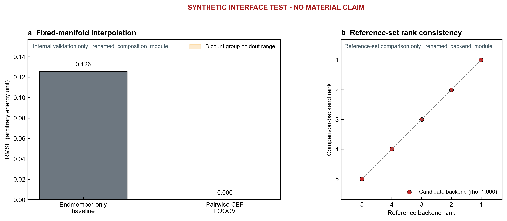

Bounded validation report
System: synthetic_three_element_custom_manifest Status: passed
Validated scope. Software input-substitution test using deterministic synthetic tables; no material claim.
Non-claim. This report does not establish transferability to a new host, prototype, or bonding class and does not predict synthesizability.
Claim boundary
| software_configurability | demonstrated_for_bundled_inputs | Bundled modules are driven by external JSON inputs. |
|---|---|---|
| within_manifold_interpolation | validated_internal | Validation is internal to the supplied fixed composition manifold. |
| binary_energy_rank_consistency | observed_reference_set | Agreement is observed only on the supplied matched reference set. |
| new_host_or_prototype_transferability | not_evaluated | No cross-host or cross-prototype validation is supplied. |
| nonmetal_compound_transferability | not_evaluated | N/O/S/P systems require replacement or revalidation of scientific modules. |
| synthesizability | not_predicted | Continuous calculations prioritize candidates; they do not classify synthesis success. |
Visual evidence

Module results
renamed_composition_module | Manifold regression
| Composition rows | 15 |
|---|---|
| Mixing elements | A, B, C |
| Pair parameters | 3 |
| Training R2 | 1.000000 |
| Training RMSE | 0.000000 |
| Endmember-only RMSE | 0.125779 |
| Non-endmember LOOCV RMSE | 0.000000 |
| Energy unit | arbitrary energy unit |
| Group-holdout RMSE range | 0.000000-0.000000 |
Deterministic synthetic input-substitution test only.
This is an internal interpolation and ablation check on the supplied energy table, not an external validation of its energy backend.
renamed_backend_module | Energy-backend comparison
Backends: Reference backend, Candidate backend; unit: arbitrary energy unit
| Subset | Pair | N | Spearman rho | RMSE | Top-k overlap | Reversals | Reversal fraction |
|---|---|---|---|---|---|---|---|
| all_materials | reference_backend__candidate_backend | 5 | 1.000000 | 0.167332 | 2 | 0 | 0.000000 |
Synthetic matched-column interface check.
Limitation: Deterministic synthetic data; no scientific material inference.
Module contracts
manifold_regression
Evidence: internal_interpolation_validation
Excluded: energy-backend accuracy; global phase stability; new-host or new-prototype transferability; synthesizability
energy_backend_comparison
Evidence: reference_set_consistency
Excluded: universal potential accuracy; five-component transferability; synthesis classification